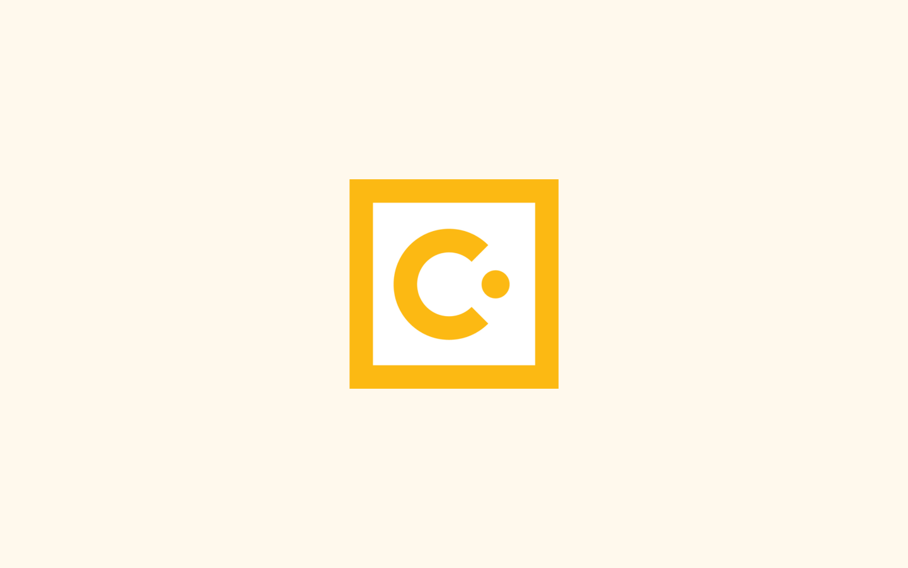
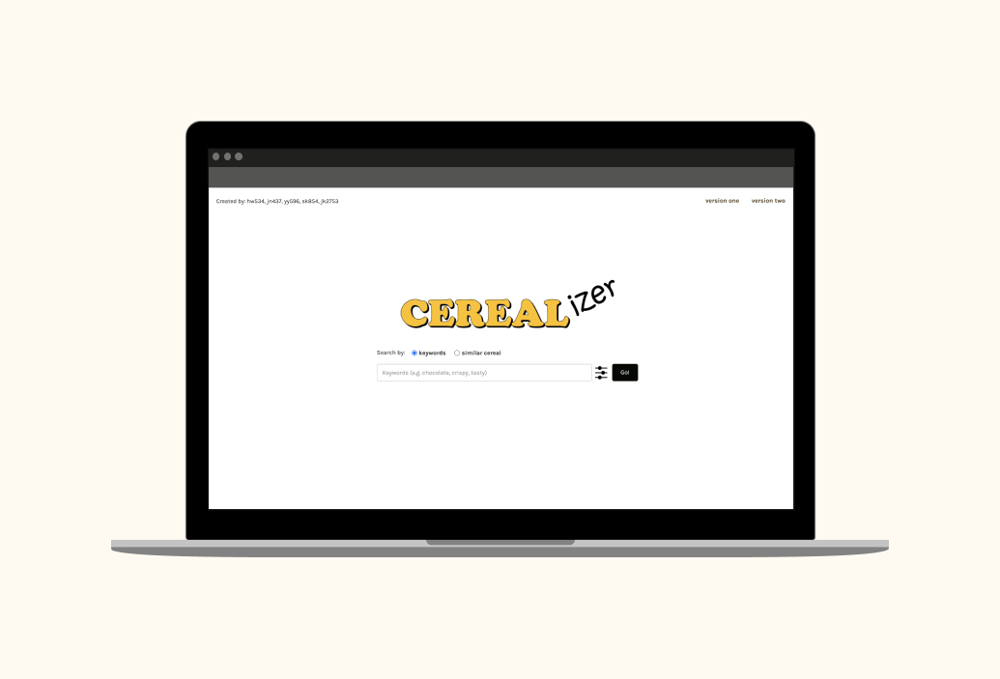

Hello, I'm Joie.
I am a senior studying Computer Science at Cornell.
Software Engineer Intern | Summer 2021
Web engineer on Community Discovery Events Team.
Languages: ReactJS, GraphQL, Hack

Full Stack Engineer Intern | Summer 2020
Languages: ReactJS, NodeJS
Computer Science Sub-Team Lead
Cornell University Sustainable Design’s Currents project aims to maximize
energy savings in campus rooms by controlling the heating systems. The
mobile application allows users to update heating system settings based on their
preferences. I previously contributed as a full stack developer, building
the mobile app and integrating with the server using ReactNative and NodeJS.
read more →

Full Stack Developer
Implemented webscraping and relevance feedback, and frontend of the web application using Python, HTML, and CSS.
Cerealizer provides cereal recommendations based on user input keywords.
read more →